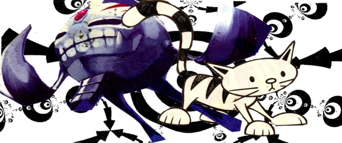
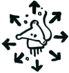

free networks are paths through the woods
paths that lead interesting places grow
paths that lead nowhere disappear
reseaux libres sont des chemins dans les bois
les chemins qui menant a des endroits interessants grandir
les chemins qui ne menent nulle part disparaitre
This site is for spreading/sharing/creating a low tech network. Community run alternatives to commercially 'provided' communications and energy. Encouraging a total shift in topology, decentralised and self-organised. Linking existing projects, trying out new ideas, and questioning what we really need.
Before trying to re-create what is currently available commercially, a critical approach is taken. Identifying problems, such as that computer use pacifies us physically; and that centralised, long-distance communication networks encourage interactions which abstract us from our physical surroundings.
Communications are an inherent part of our social organisation. The ideas presented here focus on becoming more autonomous, to enable us to move from cities to more rural or sparesly inhabited areas, gaining access to land to grow food and medicinal plants and having time, space and a medium to develop our ideas.
And whatever else you/me/we find interesting. Little attempt is made to separate practical information from art/ideas/dreams, which to some may seem disorganised...
low frequency - low bandwith - longer range
An idea is to use modified radio equipment to link different kinds of existing networks and adapt to the chaotic situations we live in. Existing projects seem to be shifting towards using higher and higher frequencies as the bands become become more crowded and people want more bandwidth (5GHz etc). Another approach could be to use lower frequencies and lower bandwidth, for a more robust communication solution for rural areas and less directional, allowing more ad-hoc 'random' connectivity (rather than point-to-point links) and a more inclusive network.
embrace the limitations
The physical and geographical limitations of using decentralised radio networks could actually be an advantage, encouraging us to interact locally, with a network topology which reflects directly our capability to interect physically. There is still the possiblity of long distance communication, but the nature of the topology means you are more likely to find things which are geographically nearby. Ask the person standing next to you before asking someone on the other side of the world, discover the places around you, re-establishing community with neighbours and physically touching each other. Sometimes the thing you are searching for is right in front of your face.
unplug ourselves
Energy and communication networks are inherently linked. Decentralised communication will require decentralised power. The network must be able to operate with minimal maintainance or reliance on conventional industry. Mainstream battery technology is favouring increasing power density regardless of battery lifetime (a small battery is able to give much power, but you can throw it away after a few years). Whats needed is a technological shift in the opposite direction. Bigger batteries, giving low power for a long time, which almost never need replacing. This could be possible using salts such as Alum.
sections of this site
-
community run communication main article including sections on amateur radio, pirate radio broadcast, wifi networks and software defined radio
-
free networks short zine introduction to idea of free networks (french/enghlish) Note that this consists of images and may take time to load.
- 430mhz data transfer a project being tested - like normal 2.4GHz wifi, but lower frequency to not need a line-of-sight link
- alternative energy off-grid systems - wind, solar, batteries, and eco-construction
- plants, health, food and gardening and compost toilets
- open source tech software and hardware
- water containers, wells, pumps, drainage
- squatting/travelling/land rights
- magic emergence, stigmergy, chaos
- the blockchain the technology behind bitcoin, and its social impact, good or bad.
- mousing about in a cisted twity zine about city life. we lived in all the spaces they were too busy to notice. we danced after they'd gone to bed, and feasted on their crumbs.
- art/wierd/party / biscuits image board / urban regeneration drawings / bad songs
- other stuff and unsorted links
For some years, this site was a wiki. It is currently a static site, built from markdown in a git repository at github.com/ameba23/lowtechnetwork if you want to add or change something, do so by branching the git repository and issuing a pull request.
Paper versions of parts of this site are also in distribution.

this site is hosted at ehion.com and was previously using mediawiki (the software used for wikipedia), and before that it was dokuwiki, a simpler php software here is the old dokuwiki site, and before that it was hosted on wikispaces a free wiki hosting service, and before that a static html site on a server called Hades, at least 10 years ago. It will maybe switch soon to 'moinmoin' or 'awkiawki' or another wiki software which uses flat files rather than a database, easier for editing offline or directly on the server.